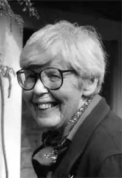

Анна Філіпа Пірс ((англ. Ann Philippa Pearce), 22 січня 1920 році, Грейт-Шелфорд [en], Кембриджшир, Великобританія — 21 грудня 2006, Дарем, Великобританія)) — англійська дитяча поетеса, письменниця. У 1958 році стала володарем медалі Карнегі в галузі літератури за твір "Том і опівнічний сад". У 1997 році за заслуги в дитячій літературі Пірс була нагороджена орденом Британської імперії четвертого ступеня (офіцер).
Анна Філіпа Пірс народилася 22 січня 1920 року в Грейт Шефолде в сім'ї мірошника. Була молодшою дитиною з чотирьох дітей. Закінчила школу Пірсі для дівчаток, а після, отримавши стипендію, надійшла в Гертон-коледж при Кембриджському університеті. Під час навчання Пірс вивчала англійську мову та історію. З початком Другої світової війни вона працювала тимчасовим державним службовцям, а потім сценаристом і продюсером шкільного радіомовлення Бі-бі-сі. На цій посаді Пірс пропрацювала протягом тринадцяти років до 1958 року. Потім, на короткий період часу, вона була запрошена редактором у відділі освіти Clarendon Press (OUP) в Оксфорді. У 1960 році Пірс переїхала в Лондон і стала працювати дитячим редактором у видавництві "Andre Deutsch Ltd" аж до 1967 року. Паралельно з цим вона підробляла продюсером на радіо, де писала твори як для дорослих, так і для дітей. Незабаром Пірс вийшла заміж за Мартіна Крісті (англ. Martin Christie), виробника фруктів, і в 1963 році у пари народилася дочка. До 1973 року Пірс працювала фрілансером в Лондоні, де співпрацювала з такими видавництвами як "The Guardian" і "The Times Literary Supplement". Читала лекції з історії і складала дитячі оповідання. У 1973 році вона разом з дочкою переїхали в Грейт Шефолде. У 1993 році Пірс стала членом Королівського літературного суспільства. У 1995 році отримала почесний ступінь "Доктор гуманітарних наук" від Університету Халла. У 1997 році вона була нагороджена орденом Британської імперії "за послуги в дитячій літературі". Анна Філіпа Пірс померла в Даремі 21 грудня 2006 року.
Твори Minnow on the Say (1955); Tom's Midnight Garden (1958); Children of the House (1968); The Battle of Bubble and Squeak (1978); The Little Gentleman (2004).